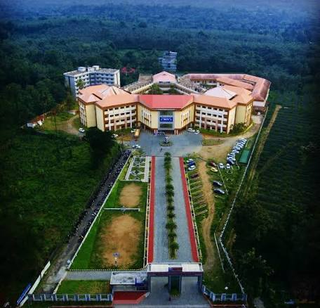

Welcome to MBITS Engineering College, a premier institution started in 2009, that is committed to providing quality education to students who are passionate about pursuing a career in engineering.
We take pride in the fact that we are accredited by the National Board of Accreditation (NBA) and National Assessment and Accreditation Council (NAAC), an autonomous body established by the University Grants Commission (UGC) of India to assess and accredit institutions of higher education in the country.
Our motto, "Wisdom Crowns Knowledge", reflects our belief that true knowledge is not just about what you learn in the classroom, but also about how you apply that knowledge in real-world situations.
At MBITS, we strive to provide our students with a holistic learning experience that goes beyond academic excellence.